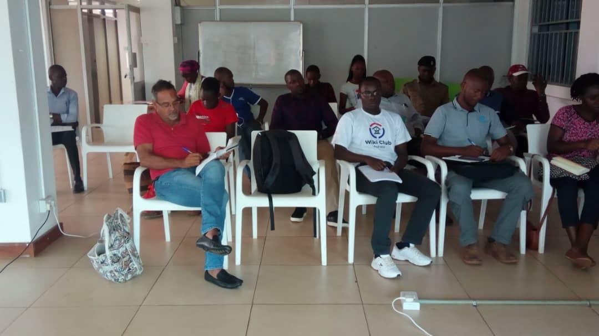
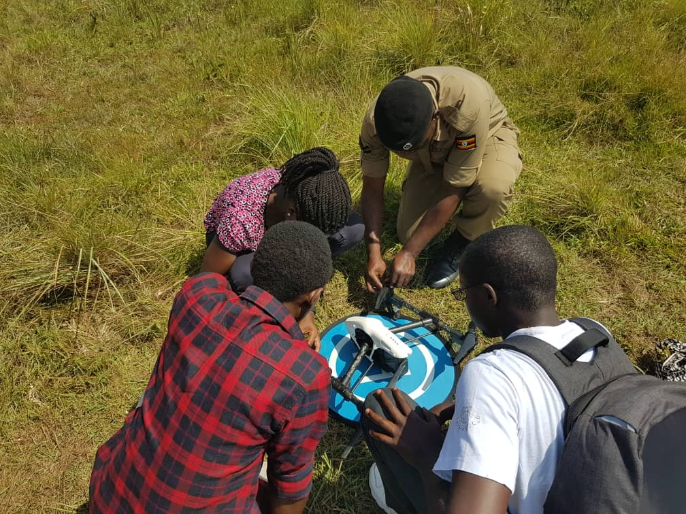
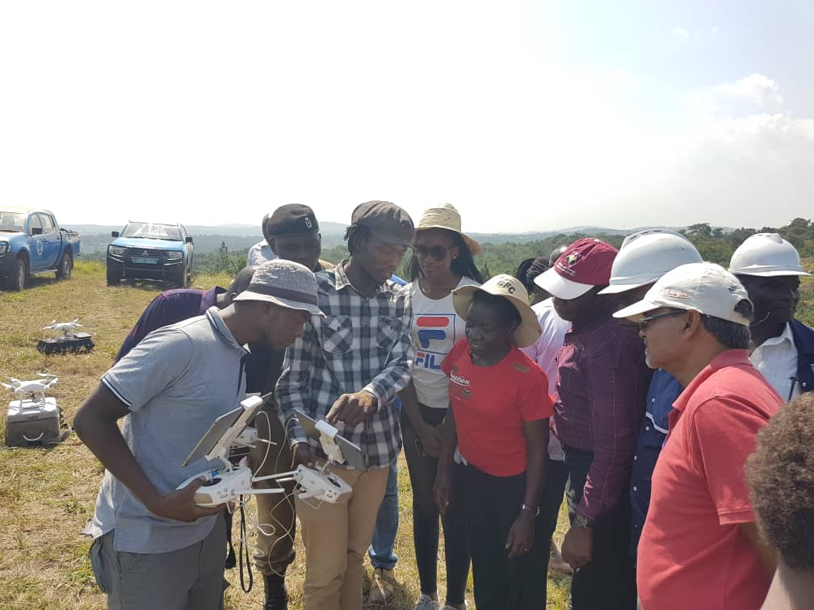
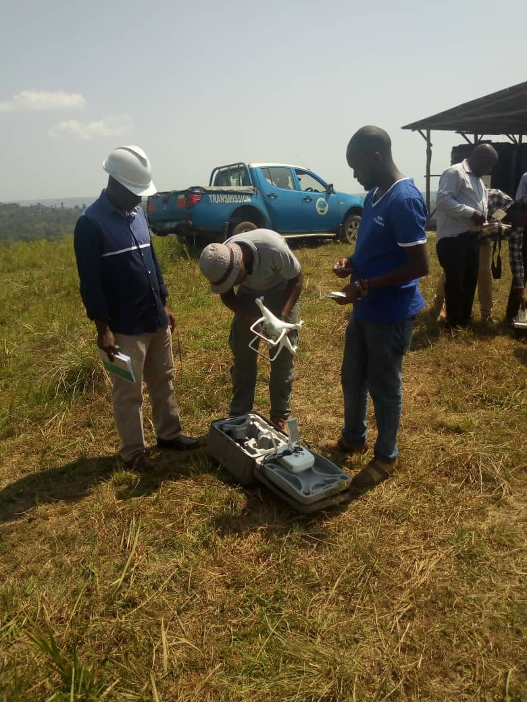
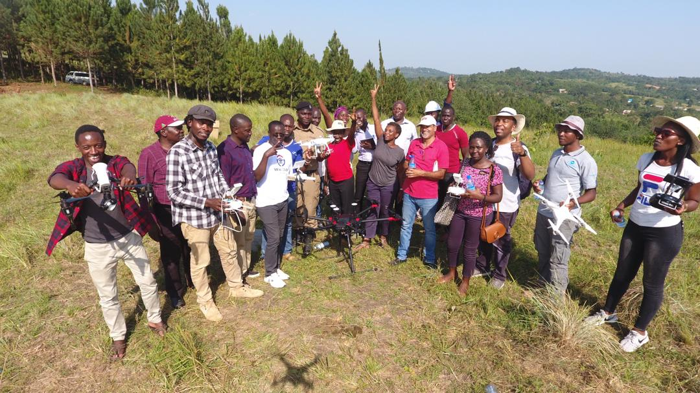

We often think that drones were designed to make the military work easy. That has been proved otherwise. Uganda Flying Labs put out publicity notices on thier social media channels to herald its robotic training. The expectation was to have responses, mainly of participants from the GIS and surveyor’s world. That limited thought was put to nil as we saw sign ups of foresters, policeman, businessman, audit firms, farmers, engineers from the Electrification and GIS experts name a few. Only to say it was an eye opener that we have to sharpen our approach to meet every user need.
The most amusing thing is that one organisation bought a drone and wanted to use it for training but did not know how to assemble the new parts together, that had to be done a day before by the Flying Labs team in order to have smooth sail on the training day. It was another form of demonstration to the client of how extensively involving drone operations can be.
On 10th February 2019 in Kampala, a second introductory drone training was conducted to fulfil both the building local robotics capacity and accelerating social good initiatives through sector-based program tracks. The training offered on-site hands on drone flight sessions and a theoretical course on the pre and post drone flight activity requirements.
Participants in the morning session for the theories on drones
The theory session did not almost end on time because the curious minds of the trainees wanted to know if they were now eligible to go to CAA and claim that they are certified. Which is far from the answer they wanted to hear because that was the infancy of the whole process. The trainers were questioned about the various codes of conduct in the Ugandan context. It was reaffirming to know that the procedure had been through CAA and Ministry of Defence. Another instructor was put to task to explain the various metallic birds and the pros and cons. Precisely the message was: “reassure us that we will make the right selection of a drone”.
Lunch was on wheels as leaners were driven to the flight site 25km away form Kampala. The flight plan had already been made prior to our take off. On arrival, a few ground rules were stated by the facilitators. Possibly they were not fullyabsorbed because the participants were way too excited to lay their hands to the drones. When the motion was set, most participants hands were on the remotes trying to fly in one direction which made the instructors a little nervous because the flights were on a cliff.
Participants installing a DJI Inspire during the field training
While some participant did not leave the Matrice 600 Pro for a single moment, others rotated around DJI Phathom. It felt like he had found the long lost love. Perhaps their minds had been made up to settle for that model.
The M600 was flown around but its legs kept sticking in and out, an experience that could refine the future use drone with better knowledge of the right operation. Since there was a lot of activity, the instructor pilot had a lot of shouting to do as well constant summoning back of the drones. Imaginably, it was a little nerve wrecking for the instructors but fun for the learners.

“I will not let go of this baby!! I shall practice on it till its no more!”
The participants were working in groups to ease the demonstrations. The DJI Phantom was the most used drone for the training.
Drone Pilot Asaph shows the participants the results of the data that was captured.
The day grudgingly came to an end, in 2 hours one could not have enough of flying but it was unfortunate we had to put it to close.
It's time to wind down operations
Ultimately, there was bonding and relationships established, leaners exchanged ideas of drone use cases. The EY participant was excited that at last he had found a solution for his clients to do audits in stock inventories especially in the telecommunication, while the farmer felt that his struggles to monitor crop harvest were soon to be unravelled. Uganda Electricity Transmission Company Limited (UECTL) who was our major client with 5 participants out 15 were evidently walking with a chip on their shoulders as they wore helmets and safety boots to exhibit "men at work." The UECTL engineers sensed that their M600 drone was going to be fully utilised to address the challenge of managing electricity transmission lines. The policeman had a sense of victory over the puzzle of crime surveillance.
Hurray! the day had been a success as the participants came to a completion of the training
A forum was created to keep the group active sharing knowledge on robotics. They are now waiting for the intermediate course. The evaluation feedback was superb. That was a training which left smiles on the faces, much as the parting was painful. By and by it was a breath-taking view of the farm from the mountain side with freshness from the greenery away from Kampala fuel fumes.

Participants pose for a photo after the training using the drone